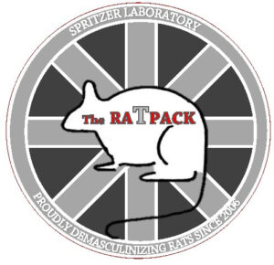
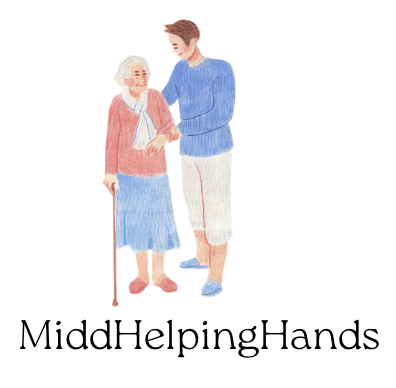

My name is Abigail Griffin and I am a senior at Middlebury College studying Neuroscience and Sociology. I am a student scientist who has worked in both the healthcare and research spaces and hope to work at the intersection of health equity and innovation.


MiddHelpingHands is a volunteer organization devoted to building a bridge between Middlebury students and the elderly communities. This program is partnered with Eastview at Middlebury, a Residential Care Home licensed by the State of Vermont Department of Aging and Independent Living. MiddHelpingHands’ goal is to continue to connect with the larger elderly community in Addison County and partner with additional nursing and hospice facilities.
Intern in the Health Services Neighborhood of EastView. In this role, I assisted with navigation to a new integrated Health Services database which digitized critical medical information for nearly 130 residents. I also provided career for up to fifteen elderly residents daily, specifically those living with cognitive decline.
Board Member of Middlebury College Access Mentors (MiddCAM), a one-on-one mentorship program which connects college student mentors to Middlebury Union High School students.
Participant in a rigorous mentor-driven, hands-on leadership program for innovation and entrepreneurship with a focus on consulting, innovation, strategic thinking, social entrepreneurship, and business.